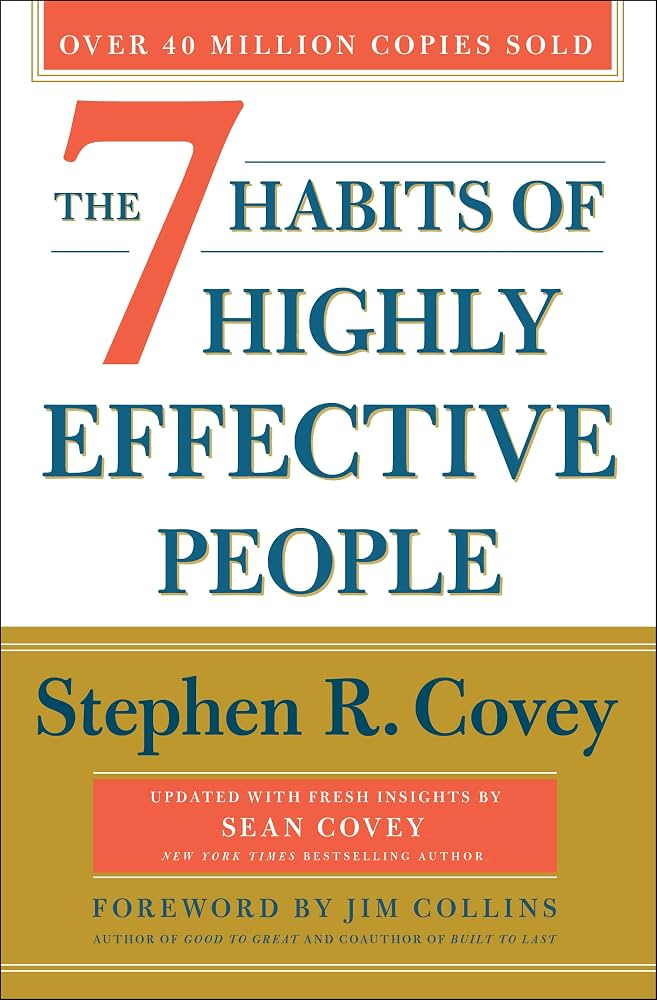

The 7 Habits of Highly Effective People opens with a diagnosis: Stephen Covey, after decades of studying success literature, noticed that material written before roughly 1930 centered on what he calls the Character Ethic — integrity, humility, courage, patience, and other foundational qualities — while most modern success literature had shifted to a Personality Ethic, built on techniques, image management, and quick fixes for influencing others. His central claim is that Personality Ethic advice can create bursts of short-term influence, but collapses under sustained testing, because it tries to change surface behavior without addressing the character actually producing it.
From that diagnosis, Covey builds a complete architecture. The seven habits are not a random list of good practices — they follow a deliberate sequence mapped onto what he calls the Maturity Continuum: Dependence (relying on others), Independence (relying on yourself), and Interdependence (combining your effort with others to achieve more than either could alone). Habits 1–3 produce a Private Victory that moves a person from dependence to independence; Habits 4–6 produce a Public Victory that moves a person from independence to interdependence; Habit 7 renews the entire system so it doesn't erode over time.
The book's method is deliberately "inside-out": rather than trying to change circumstances, other people, or your image, real effectiveness starts with examining and changing your own paradigms — the mental maps through which you interpret everything. Covey pairs this philosophy with concrete, repeatable tools (a Personal Mission Statement, the Emotional Bank Account, the Time Management Matrix, empathic listening) that turn the underlying principles into daily, practicable habits rather than abstract ideals.
The spine the entire book is built on. Habits 1–3 move you left to right across the first arrow; Habits 4–6 move you across the second.
Proactive people focus their energy inside the inner circle — which causes it to expand. Reactive people focus on the outer circle — blame, circumstance, other people — which causes it to shrink.
The outer ring is everything you care about — proactive energy stays inside the inner ring.
Effective people spend as much time as possible in Quadrant II — it has no built-in urgency, so protecting it requires deliberate weekly planning.
Trust in any relationship works like a bank balance. Deposits — courtesy, kept commitments, clarifying expectations, small kindnesses, sincere apologies — build reserve; withdrawals — broken promises, disrespect, disloyalty — draw it down. A high balance makes communication forgiving; a low one makes it brittle.
A written articulation of the principles and roles by which you choose to live, functioning as a personal constitution against which daily decisions can be measured — the practical output of Habit 2's "begin with the end in mind."
Of six possible interaction paradigms (Win/Win, Win/Lose, Lose/Win, Lose/Lose, Win, Win/Win or No Deal), only Win/Win is sustainable in ongoing relationships. The willingness to walk away — No Deal — is what keeps Win/Win honest rather than becoming a disguised Lose/Win.
Listening to genuinely understand another person's frame of reference and feelings, not simply to reply. The prerequisite for being heard yourself — most influence attempts fail because the other person never felt understood first.
The state where 1 + 1 produces 3 or more. Genuine differences between people, explored with enough trust and skill, become raw material for a solution better than either party's original position — distinct from compromise, where both sides simply settle for less.
Begin with the end in mind.
Seek first to understand, then to be understood.
Sharpen the saw.
Live out of your imagination, not your history.
If the book has one idea worth carrying forward above all others, it's the inside-out principle itself: effectiveness with other people, circumstances, and outcomes is never won by working directly on those things first — it's won by working on your own character and paradigms, which then changes how you show up everywhere else. Trying to fix a relationship, a team, or a result from the outside in produces temporary technique at best and resentment at worst.
This is what makes the Emotional Bank Account and the Circle of Influence so durable as tools — both redirect attention back to the one variable you actually control: your own behavior and where you choose to spend your energy. Everything else in the book, from Win/Win to synergy to renewal, is really an elaboration of that same single move, applied to a different domain.
What keeps this from being just a feel-good platitude is the sequencing: Covey is explicit that private victory has to come before public victory. Skipping straight to "communication techniques" or "negotiation tactics" without doing the private, character-level work underneath produces exactly the kind of hollow, technique-only effectiveness the book opens by diagnosing and rejecting.
The 7 Habits of Highly Effective People earns its status as the foundational text of modern personal-effectiveness literature by doing something most books in the category don't: building a genuinely complete, sequenced architecture rather than a collection of loosely related tips. Every habit has an explicit place in the Maturity Continuum, and the book is disciplined about insisting the sequence matters — you cannot skip private victory and expect public victory to hold.
Its greatest strength is durability. Decades after publication, the Emotional Bank Account, the Circle of Influence, the Four Quadrants, and "seek first to understand" remain in active daily use across business, education, and personal life — a rare outcome for a self-help framework, and strong evidence the underlying principles were never really trend-dependent to begin with.
The honest caveat is that this is a dense book that rewards re-reading far more than a single pass. Some sections feel repetitive, some examples read as dated, and the framework says relatively little about structural constraints outside an individual's control. Read it as a durable operating system to be revisited over years, not a technique to apply once and move past.
The practical recommendation: read the whole book once for the full architecture, then keep the Four Quadrants and the Emotional Bank Account close at hand for daily use. The real value isn't in agreeing intellectually that the habits sound right — it's in actually writing the Personal Mission Statement, actually protecting Quadrant II time, and actually listening to understand before being understood, which is exactly the discipline the entire book is built to install.